Data Structures and Algorithms
with Object-Oriented Design Patterns in C++
Data Structures and Algorithms
with Object-Oriented Design Patterns in C++
In this section we reexamine the asymptotic behavior of polynomials in n.
In Section  we showed that 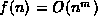.
That is, f(n) grows asymptotically no more quickly than
we showed that 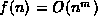.
That is, f(n) grows asymptotically no more quickly than  .
This time we are interested in the asymptotic lower bound
rather than the asymptotic upper bound.
We will see that as n gets large,
the term involving
.
This time we are interested in the asymptotic lower bound
rather than the asymptotic upper bound.
We will see that as n gets large,
the term involving  also dominates the lower bound
in the sense that f(n) grows asymptotically as quickly as
also dominates the lower bound
in the sense that f(n) grows asymptotically as quickly as  .
I.e., that 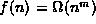.
.
I.e., that 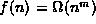.
Theorem Consider a polynomial in n of the form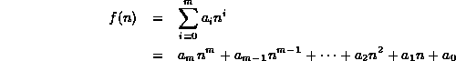
where 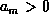. Then .
extbfProof We begin by taking the term 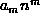 out of the summation:
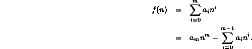
Since, n is a non-negative integer and , the term is positive. For each of the remaining terms in the summation, 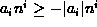. Hence
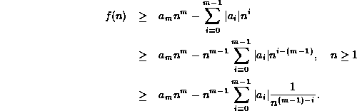
Note that for integers  ,
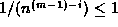 for 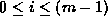.
Thus
,
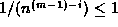 for 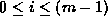.
Thus
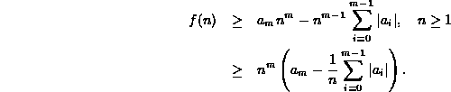
Consider the term in parentheses on the right.
What we need to do is to find a positive constant c
and an integer  so that for all integers 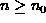
this term is greater than or equal to c:
so that for all integers 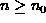
this term is greater than or equal to c:
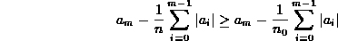
We choose the value  for which the term is greater than zero:
for which the term is greater than zero:
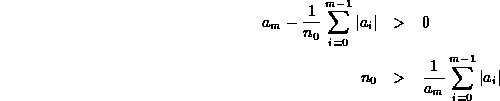
The value 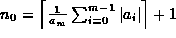 will suffice! Thus
From Equation we see that
we have found the constants  and c,
such that for all , 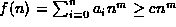.
Thus, .
and c,
such that for all , 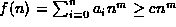.
Thus, .
This property of the asymptotic behavior of polynomials is used extensively. In fact, whenever we have a function, which is a polynomial in n, 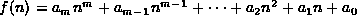 we will immediately ``drop'' the less significant terms (i.e., terms involving powers of n which are less than m), as well as the leading coefficient, , to write .
 Copyright © 1997 by Bruno R. Preiss, P.Eng. All rights reserved.
Copyright © 1997 by Bruno R. Preiss, P.Eng. All rights reserved.